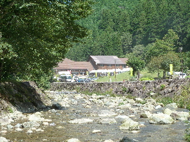
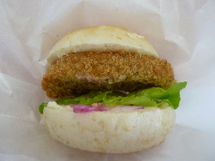

飯南町ふるさとの森フェスティバル2011
更新日 : 2011/09/23

飯南町の森のホテル「もりのす」であったイベントに行きました。
綺麗な所ですね。整備がしっかりしてあるので、とっても快適な空間だなって思いました。 いい環境です。自然って感じよりもリーゾートな感じです。
この川の網を張った場所にヤマメを放して、ヤマメのつかみ取りがありました。より自然に近いところで魚が取れていいですね。しかも無料です。凄いなって思いました。

会場で買ったもりのすバーガーです。マルベリーさんの段ボールに入っていたので、パンはマルベリーさんの商品かもしれません。中にコロッケみたいなのが入っているんですが、これってお麩なんですね。後で、もりのすのブログを見て知りました。
しっとりやわらかな食感で、マイルドな味のカツでした。
無料体験のコーナーで遊んだり、歌手の加藤登紀子さんの綺麗な歌が聴けて楽しかったです。 来年行きたいって思いました。